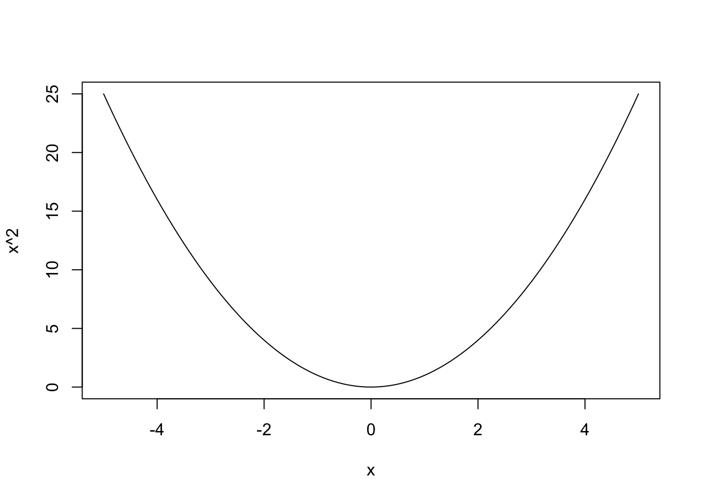

1+1[1] 2Aby wstawić sekcję należy z listy rozwijanej na powyższej belce wybrać header z odpowiednim numerem. Alternatywnie zamiast wybierać można wpisać określoną liczbę razy symbol #. Przykładowo Header 2 to w tym zapisie dwa symbole ##.
Podstawowe funkcje w języku R. Aby wstawić fragment kodu mogę kliknąć insert->code chunk->R albo skrót ctrl+alt+i.
Z R możemy korzystać jako kalkulatora.
1+1[1] 2Ma wbudowane wiele funkcji matematycznych, jak sinus.
sin(10)[1] -0.5440211Umożliwia też tworzenie prostych wykresów funkcji z wykorzystaniem curve.
curve(x^2, from=-5,to=5)
Aby wstawić symbole matematyczne w tekst należy wejść w insert -> LaTeX Math -> inline math. Natomiast wstawienie wzoru w postaci bloku wymaga wybrania w tym samym miejscu display math. Przykładowo: Niech \(X\) będzie zmienną losową pochodzącą z rozkładu normalnego danego \(x=1\) poniżej
\[ X \sim N(0,5) \]
\[ \delta = \sum_{i=-5}^{n=5} \frac{x_{i+1}}{n} \]
Cytowania w dokumencie możemy wstawić poprzez insert -> @citation i wybierając daną pozycję. Przykładowo: powołuję się w tym dokumencie na Wickham (2014). Klucz @wickham2014 w skompilowanym dokumencie przedstawiony jako Wickham (2014).